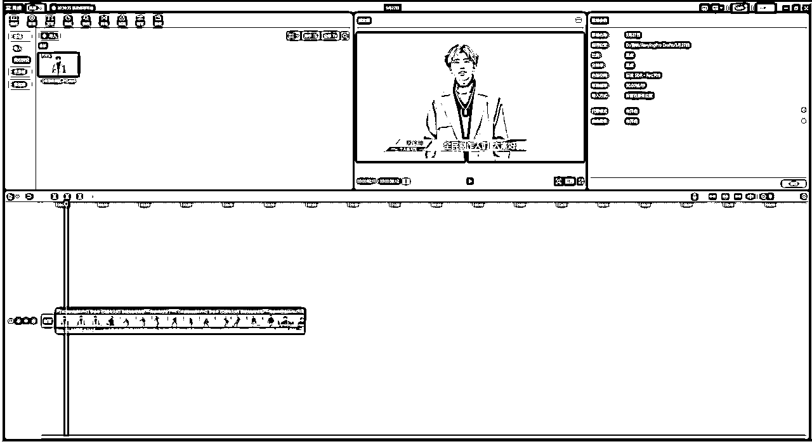

来源：https://ry5hwpuf7b.feishu.cn/docx/Lfjedtd4QoCkBhxkgTfcBsG1np0
《瞬息全宇宙终极教程，手把手教你做出百万点赞视频》
大家好，我是吴东子，用奶奶都能听懂的方式分享可以落地实操的干货
我的所有资料都在公众号「吴东子AI」
最近一种叫“瞬息全宇宙”的视频火了，抖音一期视频百万赞，各个博主视频都在带瞬息全宇宙这个标签，于是就有很多朋友催我出教程了，在琢磨了几天之后，终于整出来了
教程包含了插件的安装，界面的讲解，基本看完之后是能做出来和爆款一样的效果的
如果你想定制化操作，也有进阶的知识点让你玩出花样
另外，模型和预设也给大家准备好了，放在文章的末尾，希望能帮助到大家
严禁抄袭搬运，势必追诉到底！
最近这段时间，一种叫瞬息全宇宙的视频火了
抖音一期视频百万赞，各个博主视频都在带瞬息全宇宙这个标签
瞬息全宇宙分两种：
一种是【穿越之旅】，另一种是【平行宇宙】
“穿越之旅”就是这种画面不断变化，变成新场景，看起来像一个穿越旅途一样的视频
“平行宇宙”就是固定着原来的照片轮廓，变成不一样的风格的视频
就像是一个人在平行宇宙，平行时空的形态
制作穿越之旅，用到的是Stable Diffusion里面的deforum插件
制作平行宇宙，用到的则是一个叫runway的网站里的功能
两种视频都叫“瞬息全宇宙”，但做法是完全不同的
于是你会发现网络上很多文章，其实都没搞懂两者的区别就教别人做了，甚至很多是教大家用做“穿越之旅”的方式去做“平行宇宙”的效果，结果最后观众其实做不出自己心中想要的效果
所以希望这篇文章能带给大家更准确一点的认识，如果我有说错的地方也欢迎大家指正
这篇文章主要是跟大家分享“平行宇宙”的制作方法
如果想简单的也可用手机剪映APP制作简易版“平行宇宙”
穿越之旅的制作方法可以看这里
平行宇宙用的是runway里面 视频生成视频 的一个功能
具体可以分为三个步骤：
1.用剪辑软件裁剪原始视频
2.用runway转换视频
3.将转换的视频拼接到一起
接下来我们一起去做这个坤坤的实际案例！
在用runway进行视频转换之前
我们要先处理一下视频素材，把它切成一个个4秒内的小片段
因为runway的免费版本只能处理4秒内的视频
我们需要用到PR或者剪映之类剪辑软件
这里我就用剪映给大家做示范了，因为剪映会更适合新手小白上手使用
没有下载剪映的朋友们可以点击下面的链接下载
https://www.capcut.cn/
下载好了之后打开剪映，导入我们要处理的视频素材
这里我就借用一段坤坤的视频作为示范啦

然后把我们需要进行视频转换的片段全部切成4秒内的小片段
我这里只切成了2秒左右的片段
接下来我们就要把这些小片段全部分别保存下来
选中一个片段，把指针放到片段的开头，按键盘上的“I”
再把指针拉到片段的结尾，按键盘上的“O”
这样就会选中这个区域
这时候就按右上角的“导出”，导出来的视频就是一个1秒钟左右的小片段

导出一个片段之后，我们用同样的方法把其他片段也导出
先点击“取消选定区域”
然后重复上一步的操作，保存其他片段

把我们要进行转换的片段全部导出，这一步就完成啦！

接下来我们就要用到runway这个网站进行视频的转换
在搜索网站上搜“runway”，也可以直接点击下面链接打开
https://runwayml.com/
点击进入，然后用邮箱注册一个账号
如果你已有谷歌或苹果账号直接登录也可以


按照网站上面的提示输入用户名和密码
当看到下面这个页面，就去邮箱里面复制一个验证码填上去

这样我们的账号就注册好啦！
我们接下来用到的就是runway里面视频转换成视频的一个功能
在runway里面，有三种转换视风格的方法：
1.导入照片，按照图片风格转换视频
2.用里面已经有的预设
3.输入关键词转换视频
导入刚刚保存的视频片段，右边可以进行照片风格的设置

我们先看到图片风格设置
里面有默认的几张照片风格可以选择
还可以点击“Upload”自己上传照片

我这里上传了一张奥特曼的照片，点击选用
然后把风格强度设置到30%左右
左边的按钮可以点击看看是什么效果，如果可以的话就可以点击右边生成视频

视频生成出来之后，点击右上角就可以保存视频

每个片段可以转换三、四个风格，保存视频
然后把所有片段都进行同样的处理

这样我们这一步就完成啦！
视频素材全部转换了风格之后，我们就可以把这些素材给拼接起来，成为一个新的视频
把刚刚保存的视频导入到剪映

因为runway生成出来的视频会比原来的视频时长稍微长了一点
所以我们要把这些视频整体加速一下，让它们的时长一样长
一般加速到1.5倍就可以了
然后把这三段视频缩短按顺序排，这样一个片段就剪好啦！
接下来把其他片段都这样剪辑好，然后加上BGM
如果有想法的话，还可以给视频做一些变速、卡点之类的处理
让视频看起来更加炫酷！

大家一起看看最后的效果吧！
runway的免费账号是有时长额度的
每个账号可以生成37秒的视频（右上角可以看自己剩下多少秒）
如果大家有几个邮箱的，可以用完时长就换一个邮箱注册
如果邮箱不够用，东子我这里分享一个创建邮箱很快的网站
https://smailpro.com/advanced
点击链接进入网站，然后点击加号新建一个邮箱

然后在弹出来的文本框里面随便输入一些数字或者字母
往下滑找到这些免费的邮箱
随便点一个，然后点击右边的绿色按钮

这里就会出现刚刚选择的邮箱
再点击这个邮箱就会复制下来
这时候就可以去注册新的runway账号
等需要在邮箱接受验证码的时候，回到这个网站
点击刷新按钮
就会看到新的邮件

点击邮件就可以看到验证码啦
复制到runway就可以继续注册账号了！
手机上的剪映APP有一个一键制作瞬息全宇宙的模板
只要导入一张照片就可以自动生成视频
打开剪映APP，点击下面的状态栏的“剪同款”
然后在搜索框里面输入“瞬息全宇宙”

选一个视频点进去，在右下角有一个“剪同款”
每个账号可以免费制作3次
然后导入一张照片，就会自动生成视频啦
最后点击右上角的“导出”就可以保存视频
大家可以看一下最后的效果，但是剪映做出来的视频风格会比较有限
好了，以上就是我们这篇文章的全部内容
如果你对AI感兴趣的话，可以关注我的公众号：吴东子AI，也欢迎分享给你身边想学AI技术的朋友
里面有我之前发过的所有文章，之后也会持续给大家更新实用的AI干货教程
我是吴东子，用奶奶都能听懂的方式，分享可以落地实操的干货，我们下篇文章再见！